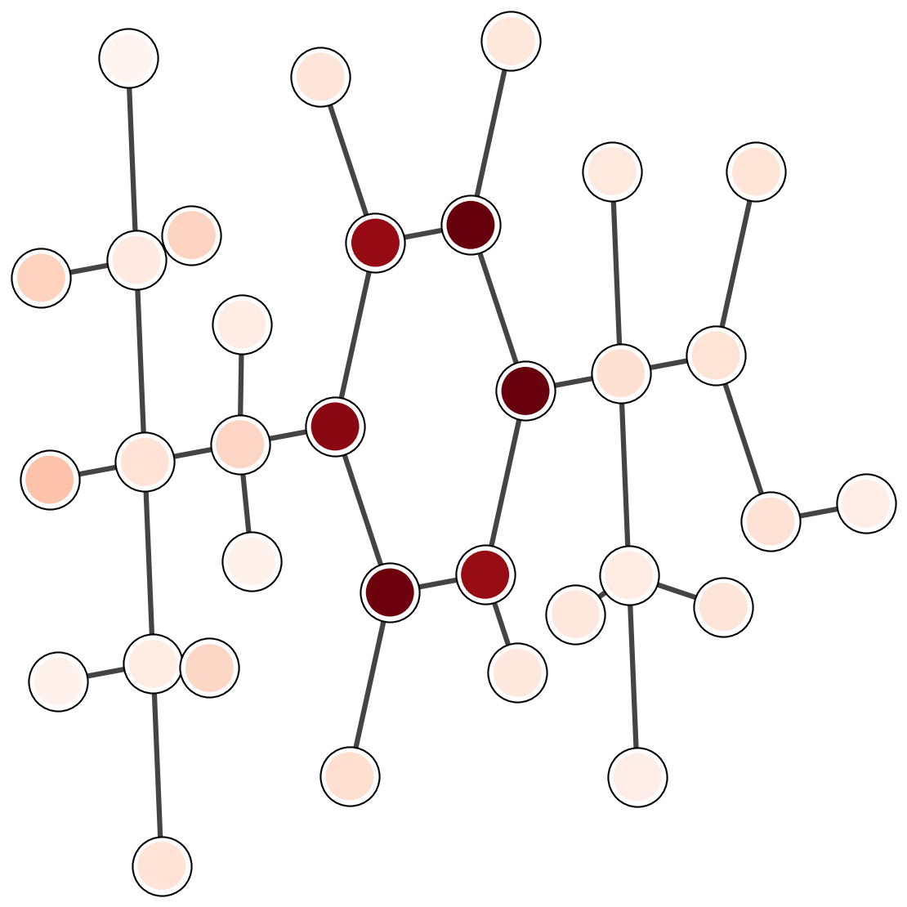
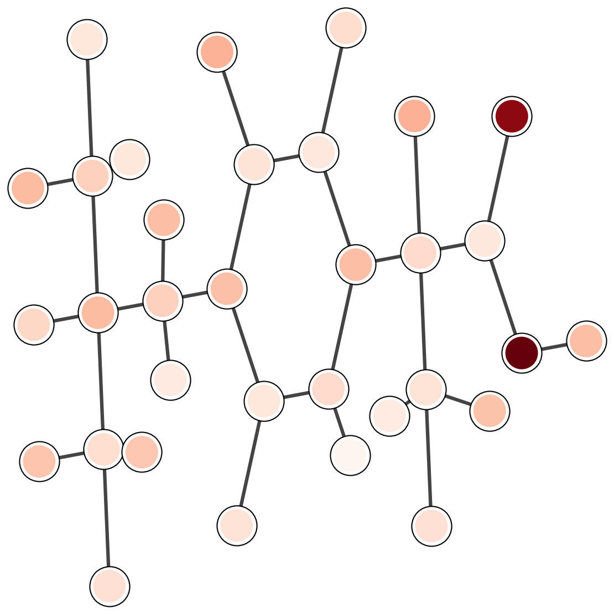
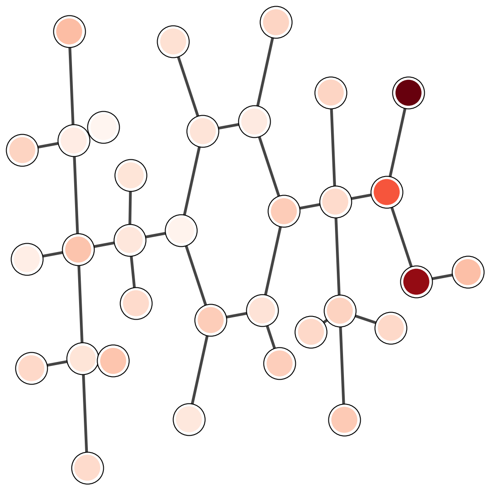

Abstract. GeoGAT is a molecular graph model that combines three sources of information: bonded connectivity, 3D geometry, and simple electronic descriptors. The network uses attention on sparse molecular graphs and a global context node that exchanges messages with all atoms. Geometry enters the attention logits through invariant pair and angle features. The context node carries long-range signals that are hard to capture with purely local message passing. This page describes the data pipeline, model equations, training objectives, and an evaluation protocol suitable for QM9-style property regression and protein-ligand affinity prediction.
Molecular properties depend on local chemistry and on spatial structure. A model that only sees the bond graph cannot distinguish conformers with the same connectivity. A model that only sees geometry may miss discrete chemical constraints encoded by bonds and valence. GeoGAT uses a graph representation augmented with geometric and electronic features, while keeping the computation sparse and scalable.
Input molecules start from SMILES. RDKit-style sanitization provides a canonical graph $G=(V,E)$ with atoms $V$ and bonds $E$. Each atom $i$ receives a feature vector $x_i$ (element, degree, formal charge, aromaticity, hybridization). Each bond $(i,j)$ receives a feature vector $b_{ij}$ (bond type, conjugation, ring membership).
A conformer generator produces Cartesian coordinates $p_i \in \mathbb{R}^3$ for each atom. GeoGAT uses rotation and translation invariant functions of these coordinates. For a bond $(i,j)$, the model uses the distance $d_{ij}=\|p_i-p_j\|_2$. For triples and quadruples, the model can use bond angles and dihedrals when available: $$\angle_{ijk}, \quad \phi_{ijkl}.$$
Conformer ensembles reduce sensitivity to a single geometry. A practical choice averages predictions over a small set of low-energy conformers, or trains with random conformers per epoch.
The input can include cheap electronic features such as partial charges and atom-wise electronegativity proxies. If quantum features are used, they should be computed with a fixed protocol and cached. The model treats these features as additional channels in the atom embedding.
Molecular benchmarks are sensitive to the split. Scaffold splits group molecules by core substructure and prevent leakage from close analogs. For protein-ligand tasks, splits should separate proteins or families to test generalization across targets.
Each atom $v$ receives an initial embedding $h_v^{(0)}$ from the concatenation of atom features, electronic features, and local geometric descriptors. $$h_v^{(0)} = \mathrm{MLP}_{\mathrm{emb}}\left([x_v \| q_v \| g_v]\right).$$
GeoGAT computes attention on graph edges. For layer $\ell$ and head $k$, the attention weight from atom $i$ to atom $j$ is
The geometric bias $\gamma_{ij}$ is a learned function of invariant geometry and bond features. A simple choice uses distance and optional angular terms:
The layer output follows standard attention aggregation: $$h_i^{(\ell+1)} = \sum_{k} \sum_{j \in \mathcal{N}(i)} \alpha_{ij}^{(\ell,k)} \, W_V^{(\ell,k)} h_j^{(\ell)},$$ followed by residual connections and normalization.
The context node $s$ exchanges messages with all atoms at each layer. It provides a global summary and enables long-range interactions without dense all-pairs attention on atoms. One update uses two attention steps:
This adds $O(|V|)$ interactions per layer for the context node, while the atom-to-atom computation stays sparse over edges.
For graph-level prediction, GeoGAT combines the context node and a pooled atom representation:
The primary loss depends on the task, such as mean squared error for regression or binary cross entropy for classification. Auxiliary losses can improve geometric consistency when training uses 3D conformers. Two simple auxiliary targets are distance reconstruction on edges and angle reconstruction on triples.
Invariance. Distances, angles, and dihedrals are invariant under global rotations and translations. Using these quantities avoids dependence on an arbitrary coordinate frame. If local frames are introduced, the design should preserve the desired invariances by construction.
A protocol that supports fair comparisons includes the split, the metric, and a fixed preprocessing pipeline. The following setup is typical for molecular regression.
Datasets.
Metrics.
The table below illustrates how results can be reported across tasks. Replace these values with your run logs and keep the split fixed across baselines.
| Task metric | SchNet | DimeNet++ | Standard GAT | GeoGAT |
|---|---|---|---|---|
| LogP RMSE (lower is better) | 0.34 | 0.28 | 0.31 | 0.20 |
| Solubility $R^2$ (higher is better) | 0.87 | 0.89 | 0.88 | 0.94 |
| Binding MAE (lower is better) | 0.58 | 0.52 | 0.55 | 0.42 |
Attention weights provide a diagnostic for which parts of a molecule influence the prediction. The plots below are a template for qualitative inspection. Each image should show a 2D depiction with attention intensity mapped onto atoms or bonds.

Common emphasis includes hydrophobic fragments and aromatic rings.

Polar groups and hydrogen-bond sites often dominate.

Interface-like fragments should carry larger weights in complex tasks.
A practical protein-ligand pipeline combines three ingredients: ligand graph features, protein sequence embeddings, and a protein structure model. A deployment-oriented design can run these components as separate services and cache intermediate outputs.
The model depends on conformer quality when 3D features are used. Conformer mismatch can add noise, especially for flexible molecules. Protein-ligand tasks require careful splits and data cleaning because many targets have strong dataset biases.
Gilmer, J., Schoenholz, S. S., Riley, P. F., Vinyals, O., and Dahl, G. E. (2017). Neural message passing for quantum chemistry. ICML.
Klicpera, J., Groß, J., and Günnemann, S. (2020). Directional message passing for molecular graphs. ICLR.
Schütt, K. T., Sauceda, H. E., Kindermans, P. J., Tkatchenko, A., and Müller, K. R. (2018). SchNet: A deep learning architecture for molecules and materials. Journal of Chemical Physics.
Vaswani, A., Shazeer, N., Parmar, N., Uszkoreit, J., Jones, L., Gomez, A. N., and Polosukhin, I. (2017). Attention is all you need. NeurIPS.
Xiong, Z., Wang, D., Liu, X., Zhong, F., Wan, X., Li, X., and Ding, K. (2019). Pushing the boundaries of molecular representation for drug discovery with graph attention. Journal of Medicinal Chemistry.
Notes: update dataset choices, hyperparameters, and the results table to match the exact runs in your repository. Keep the evaluation split fixed when comparing against baselines.